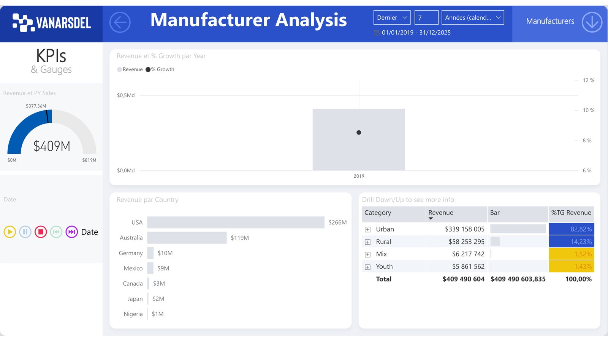
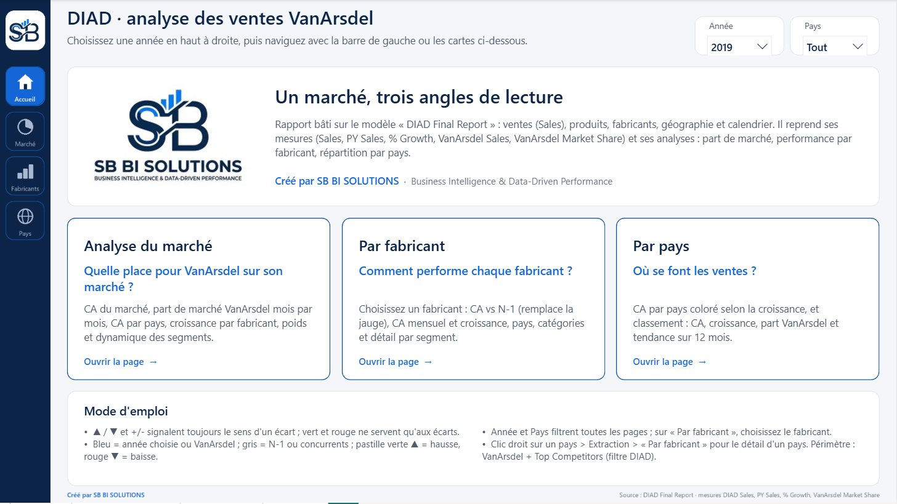
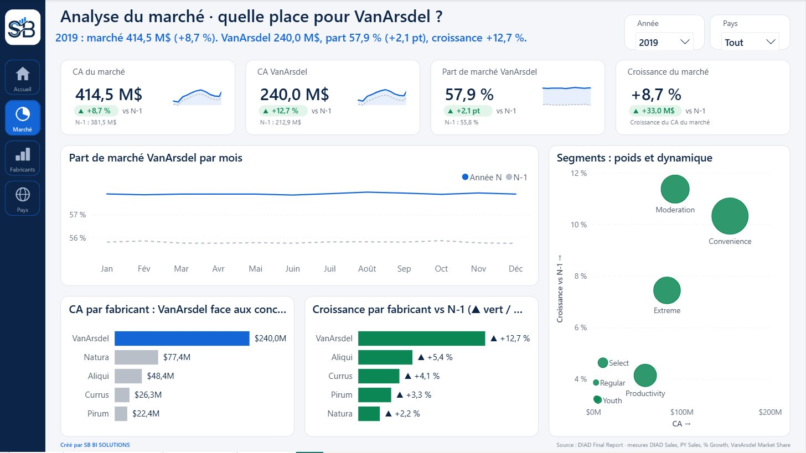
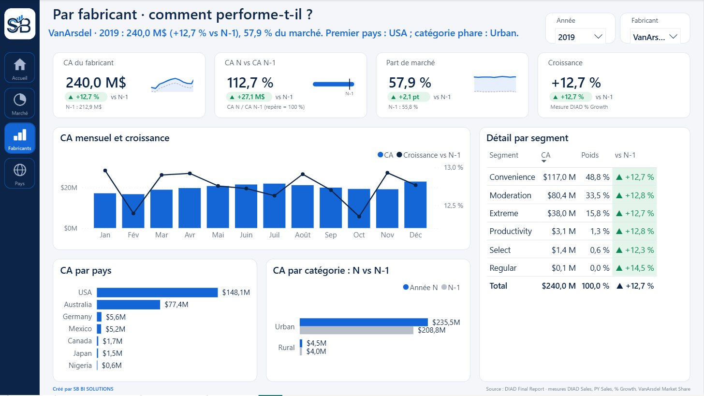
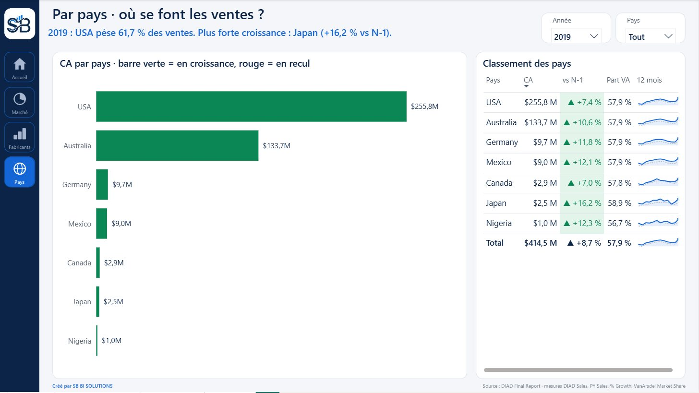

01 · AvantLe point de départ
Un rapport de formation : titres générés automatiquement (« Revenue par Country »), une jauge, une carte devenue obsolète qui ne s'affiche plus.
Des couleurs vives sans rôle et aucune phrase qui dise ce qu'il faut retenir.

02 · DémarcheCe que j'ai fait
- Garder le modèle et les mesures DIAD (Sales, PY Sales, % Growth, Market Share) et ajouter une table de 27 mesures de présentation.
- Remplacer la jauge par des KPI dessinés en SVG depuis le DAX : valeur, écart ▲▼, N-1 et courbe 12 mois.
- Vert et rouge réservés aux écarts, toujours doublés d'un symbole ▲▼ ; contrastes ≥ 4,5:1, texte alternatif sur chaque visuel.
- Une phrase d'analyse en tête de page, qui se réécrit avec les filtres année, fabricant et pays.
03 · RésultatCe que le rapport révèle
de CA VanArsdel en 2019, +12,7 % : il croît plus vite que son marché (+8,7 %, 414,5 M$).
de part de marché en un an : VanArsdel passe de 55,8 % à 57,9 %.
des ventes se font aux USA ; la plus forte croissance vient du Japon (+16,2 %).
04 · Les pages4 pages, une question chacune




05 · VidéoLe rapport en mouvement
06 · TransparenceDonnées et limites
Structure et mesures issues du DIAD Final Report de Microsoft. Les lignes de vente sont simulées (687 478 lignes, 2012-2019) et calées sur les totaux DIAD par année, fabricant, catégorie et pays.
Un rapport comme celui-ci pour votre activité ?
Je pars de vos données et de vos décisions, puis je construis le modèle, les mesures et les pages qui y répondent.